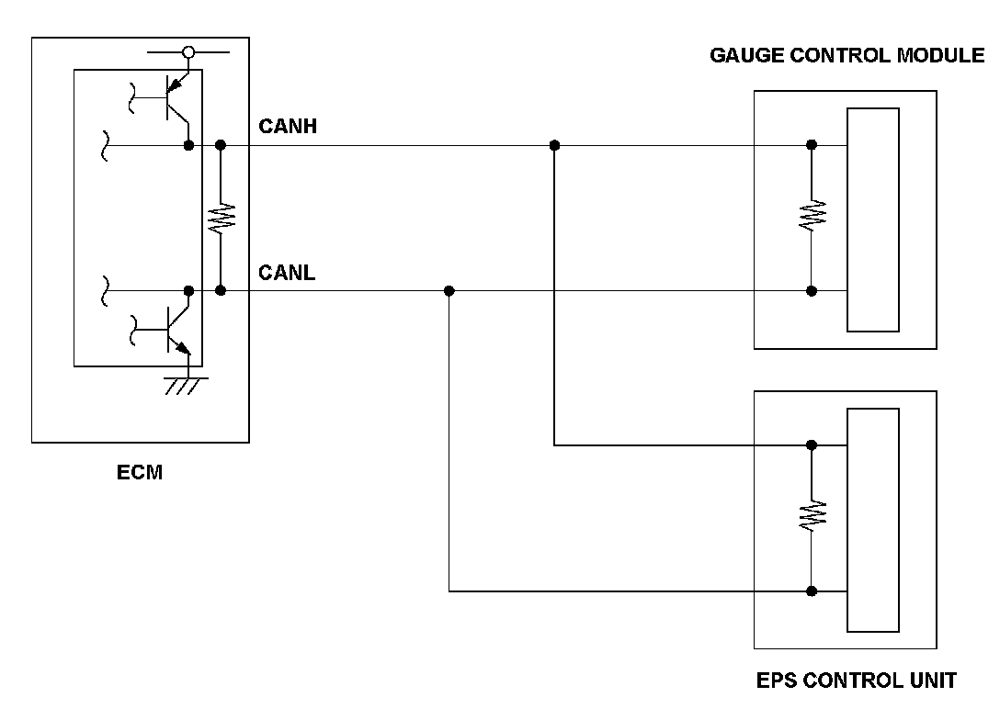
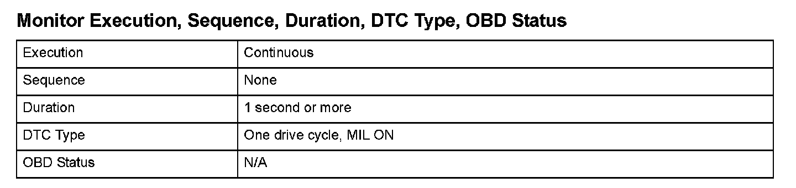
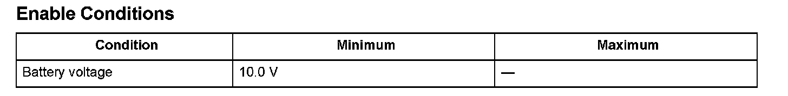

F-CAN Malfunction (BUS OFF)
DTC U0028: F-CAN Malfunction (BUS-OFF) (Engine Type: K20Z3)
General Description
The controller area network (CAN) transmits/receives pulsing signals to/from the control modules simultaneously by using two signal lines (CANH and CANL).
When the engine control module (ECM) does not receive the signals via the CAN lines for more than a set time, the EC detects a malfunction and a DTC is stored.

Monitor Execution, Sequence, Duration, DTC Type, OBD Status

Enable Conditions
Malfunction Threshold
The ECM does not receive any signals for at least 1 second.
Diagnosis Details
Conditions for illuminating the MIL
When a malfunction is detected, the MIL comes on and the DTC and the freeze frame data are stored in the ECM memory.
Conditions for clearing the MIL
The MIL will be cleared if the malfunction does not recur during three consecutive trips in which the diagnostic runs.
The MIL, the DTC, and the freeze frame data can be cleared by using the scan tool Clear command or by disconnecting the battery.